Feb 08 - Feb 10, 2023
Forum Gallery
39221 Woodward Ave, Bloomfield Hills, MI, USA
Group exhibition including work of:
Daeun(Phidia) Kang, Jaeyeon Park, Miku Saeki, Reeha Lim, Zou Chen.
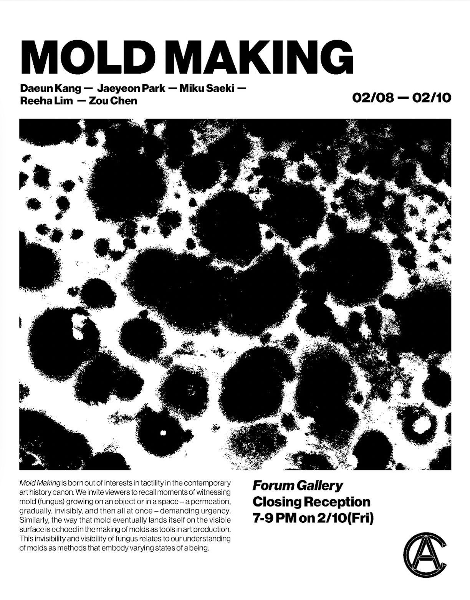


photo index
1. exhibition poster card
2. work by Kang(left), Saeki (right wall), and Chen (ceiling)
3. work by Lim(left), Park (right), and Chen (ceiling)
4. work by Chen (ceiling) and Lim (right)
poster design by Mason Goodlsby
photos by Jaeyeon Park
-
Clouded:Korean Diaspora
Aug 18 - Nov 10, 2017
Mason Fine Art Gallery
415 Plaster Ave NE, Atlanta, GA, USA
Group exhibition description:
Living in a world where we are all simultaneously connected and disconnected from each other. The use of mobile phones and other related devices has created a virtual world, which we inhabit through social media and mobile apps. This virtual space is a reflection of ourselves where time and space exist as a mere concept. Here, loved ones are but a click away when they are not physically present. This faux intimacy brings us closer to one another while simultaneously keeping us all from one another. Although it is not physically tangible, this virtual world permeates into and shapes our understanding of our reality. In celebration of Korean Independence, on August 18th, and an acknowledgment of the Asian Diaspora, Mason Fine Art Gallery presents its latest exhibition: Clouded. Consisting of six emerging Korean-American and Korean artists: Amberly Hui Hood, Daeun Kang, Daesup Song, Hwahyun Kim, Inkyeong Baek, and Kaye Patton. Baek and Patton’s works employ glossy surfaces and vivid color schemes that allude to the vivid colors used in social media apps and the surfaces that they are viewed on. Kim’s paintings of mysterious space are inspired by her dreams: where her fears and hopes come from living as a foreigner. The works of Daesup, Hood, and Kang utilize materials as a means of evoking familiarity and upbringing of the emotional burdens that come from the flawed ideals and modeled American dreams in both real and virtual world. Together, their all works unfold sweet and sour experiences that are born in virtual reality, a product of being detached from their selfhood, native world, and loved ones back home. “Clouded” is a reference to traditional Korean folklore, where clouds were the embodiment of all things ideal; symbolic of enlightenment. In today’s digital age, social interactions, entire libraries of information and culture all preside online omnipresently. Cloud computing has made storing information easier, and accessing information has never been simpler. The rise of social media has not only made keeping in touch with others the easiest it has ever been, but also an integral part of our understanding of ourselves. This is what Clouded seeks to address. As we become rapidly more and more connected, there is a sense of awkwardness and disconnection that comes from this mutation of ideas and cultures, and from a lack of physical interaction.


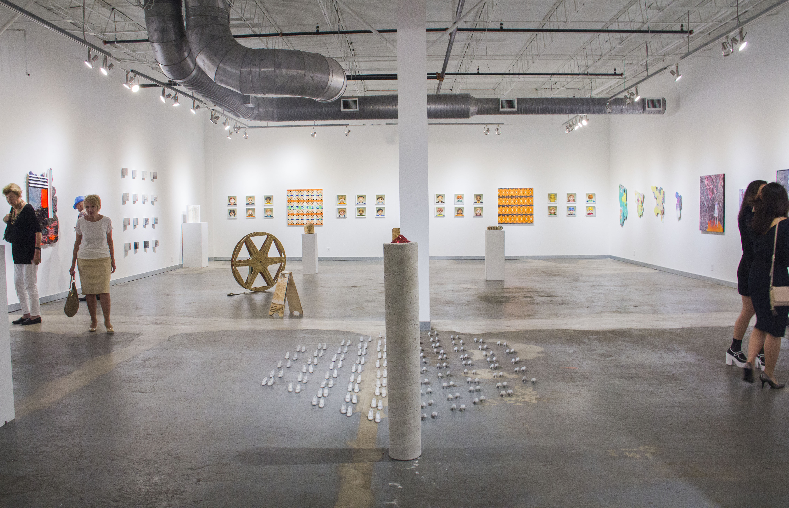 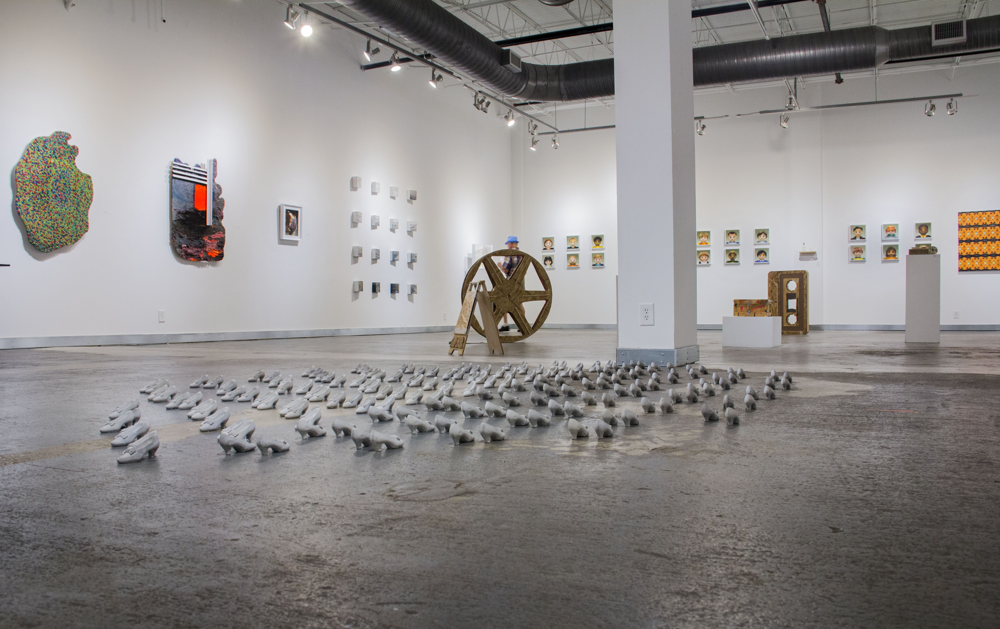 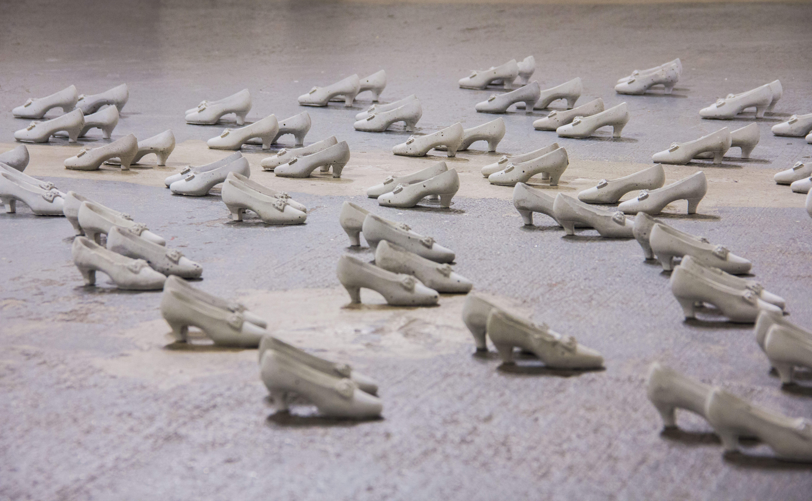 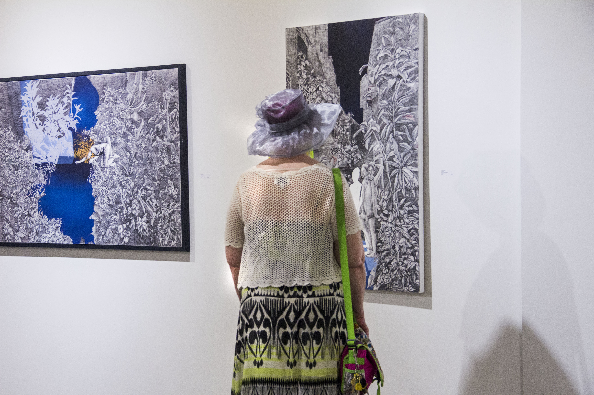 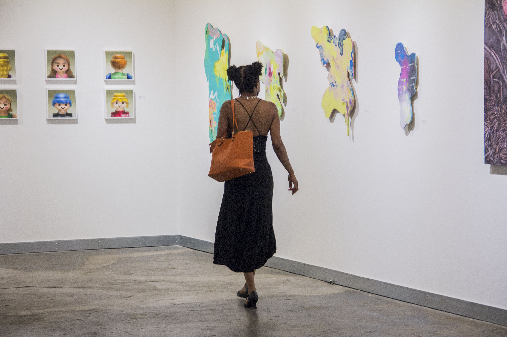 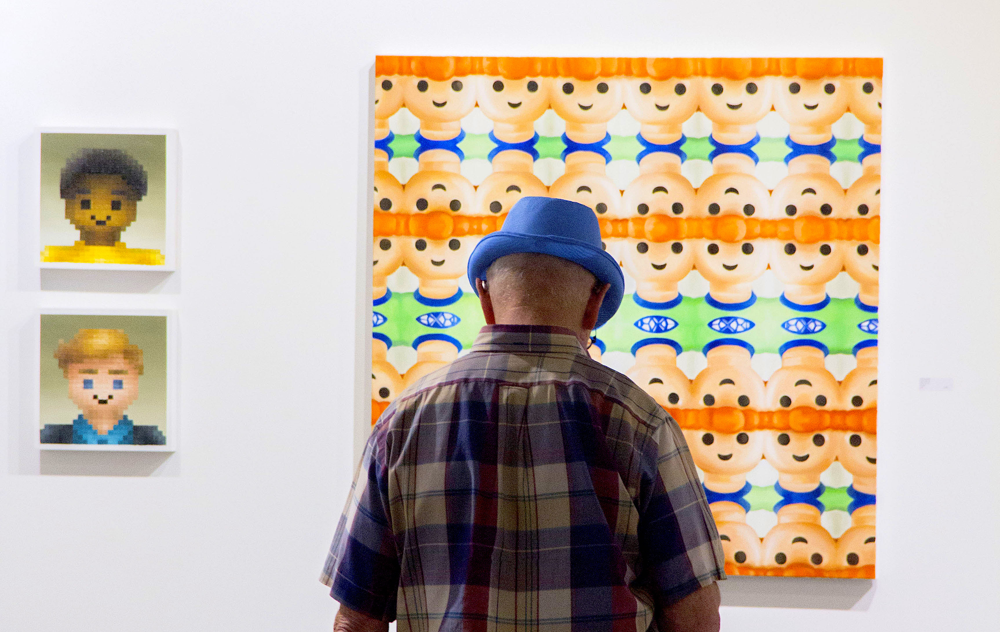 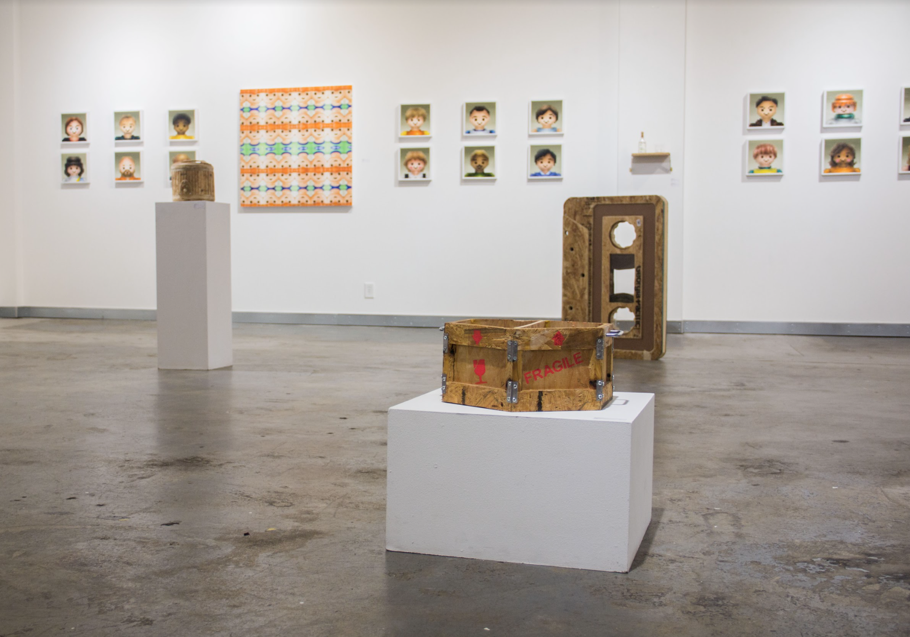
 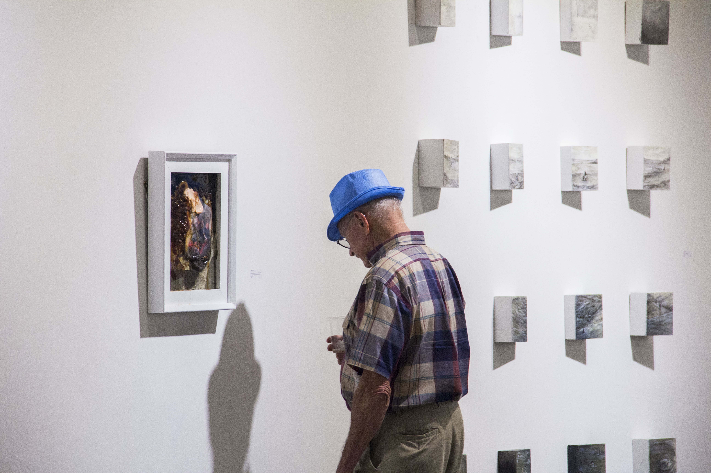
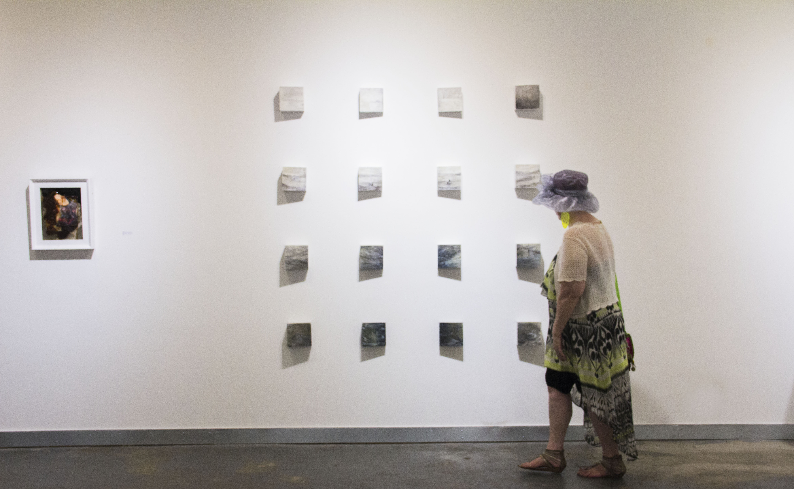
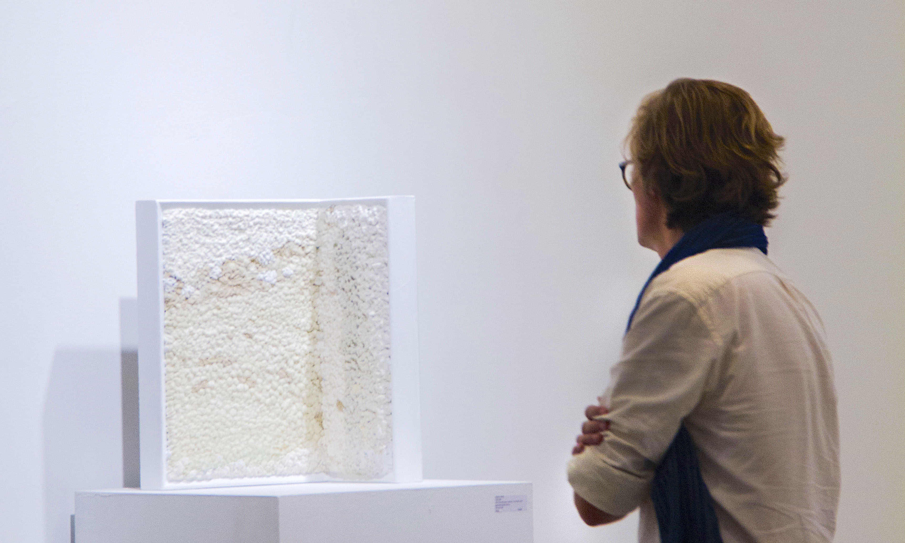
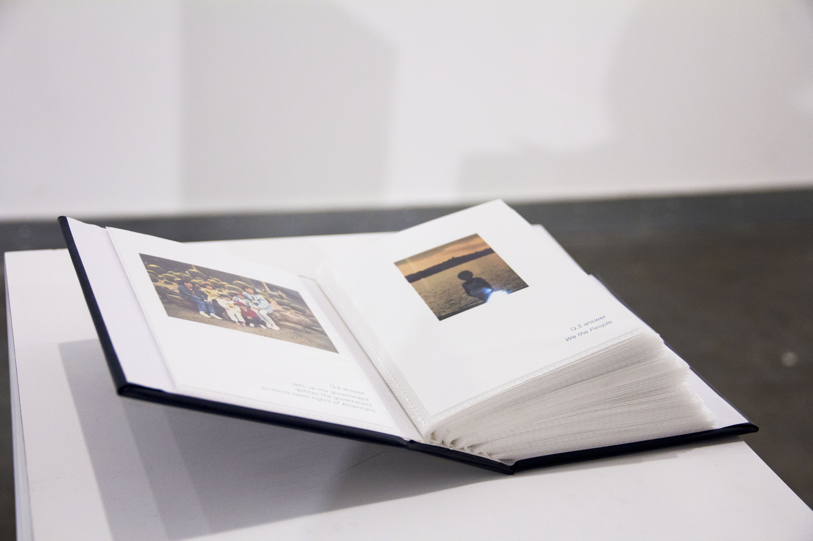
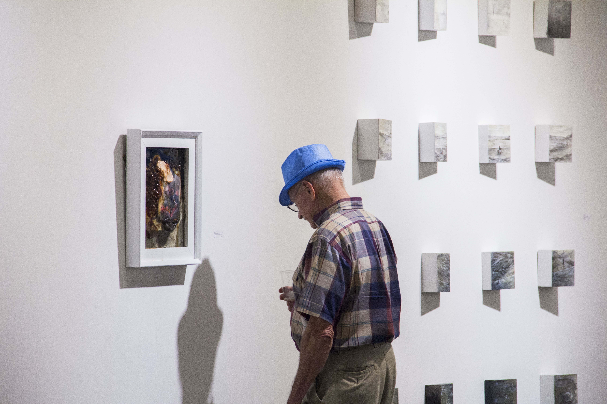
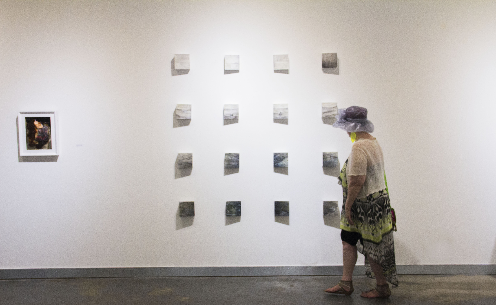
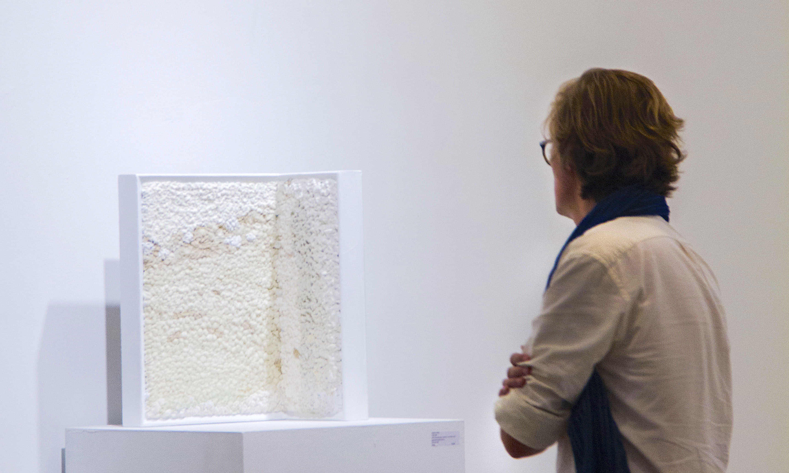
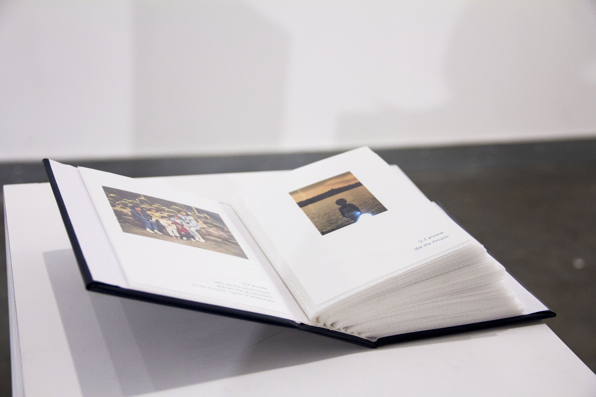photo index
1-2. exhibition poster card
3-4. exhibition view
5. work by Kaye Lee Patton
6. work by Hwahyun Kim
7. work by Amberly Hood (right wall)
8. work by Inkyeong Baek
9-10. work by Inkyeong Baek(wall) and Daesup Song (floor)
11-13. work by Phidia Kang (Daeun)
14. work by Kaye Lee Patton
photos by Ana Milena Bojanini